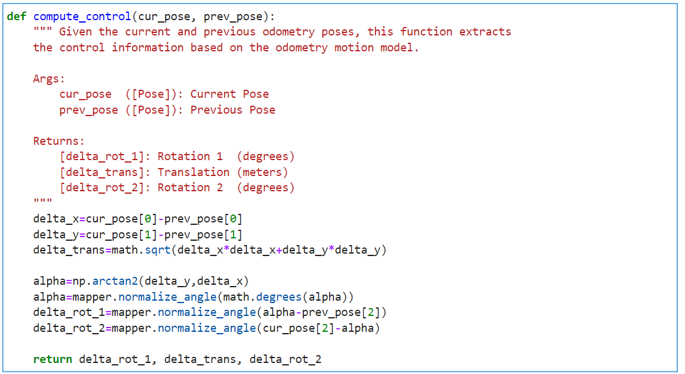
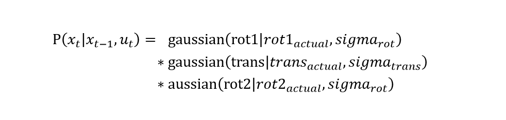
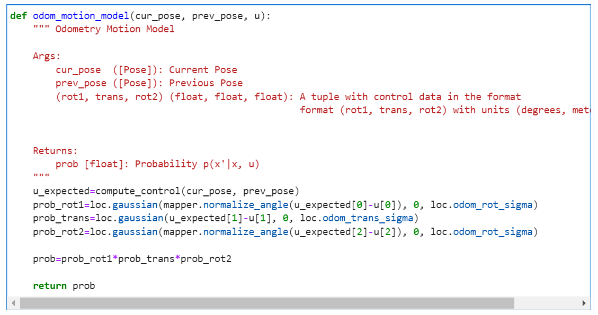
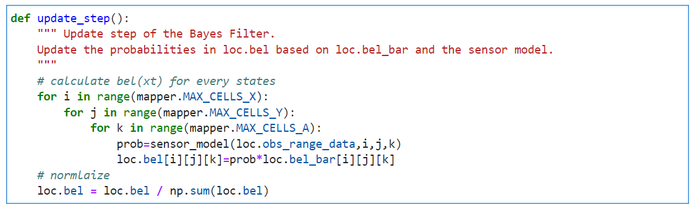

Grid Localization
The robot state is 3 dimensional and is given by [x, y, theta].
In this lab, the robot’s world is a continuous space that spans from[1]:
y: [-1.3716, +1.3716) meters or [-4.5, +4.5) feet;
theta: [-180, +180) degrees.
Motion Model
The odometry data before and after the movement is recorded at every timestamp. This relative odometry information can be described by the motion parameters: rotation1, translation, and rotation2.

compute_control to extract the control information from the odometry.

Given that the theta is in the range of [-180, +180) degrees, I used arctan2 and normalized the related output. In this lab, we assume the process noise follows a Gaussian distribution. Given the rotation1, translation and rotation2 are independent, the p(x'|x, u) is:
And I wrote a functionodom_motion_model which returns the probability p(x'|x, u).

Sensor Model
After reaching a new pose, the robot will rotate counterclockwise and get 18 measurements at the equidistant angular position. Compared with the expected measurements, we are able to correct the pose. Assuming individual measurements are independent and the noise is in gaussian distribution, the likelihood of P(z|x) is equal to:

Bayes Filter
Bayes Filter is one of the fundamental approaches to estimating the distribution in a process with incoming measurements. There are two major steps:

Step2 Update Update the likelihood based on the measurements.
Prediction Step
We need six 'for' loops to do the prediction step for all states: three for the current state, and another three for the previous state. Given that the grid has 12×9×18 possible states, the total loop number is 3,779,136, which will take a lot of time. To make the prediction more efficient, I set a threshold (0.0001) for the bel(x_prev). If the bel(x_prev) is less than the threshold, I will regard the robot can't be in this grid and skip it. That is to say, the inner three 'for' loops for getting the current states will not execute. Here is the related code.

Update Step
After the prediction, the Bayes Filter will update the probabilities based on the bel_bar and the sensor model. That is, for every state, the new likelihood is the bel_bar(xt) * p(z|x) and then normalize it. Here is the related code.

Demo
References
[1].Fast Robots Lab11 Guidance
Posted by Lanyue Fang on Apr 25, 2022